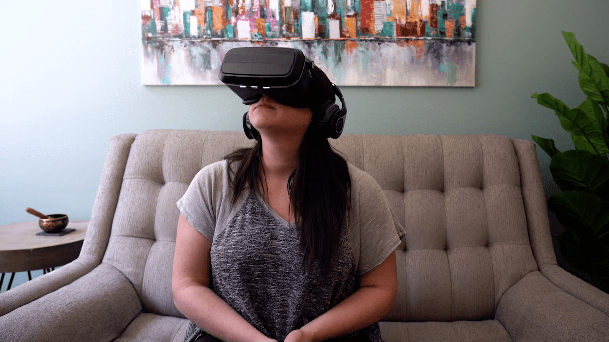

Virtual Reality is certainly an evocative technology, it just gets better and better day by day. It seems that the use of Virtual Reality as a tool has reached quite far and wide these past few years. Although VR is believed to just revolve around the gaming industry, there are several instances where VR has made some serious implications in the lives of people and tried to change the overall face of healthcare. We can say Medical VR is enriched with endless possibilities and even when the area is freshly introduced there are already some great examples of VR embarking a positive effect on the lives of both patients and medical practitioners. Here are some instances in which Virtual Reality has benefitted the world medically.
Virtual Reality is an effective tool for patients with phobias! In some exposure therapy sessions, many psychiatrists are using virtual reality to help patients deal with fears of things such as a fear of heights and claustrophobia. Virtual Reality creates a controlled environment in which patients can face their greatest fears. Patients also learn some coping strategies and breaking patterns of avoidance in a conducive setting that allows them to easily handle those gruesome situations with much ease.
Training for surgeons involves experimenting on people’s bodies along with a gradual process of assisting more experienced doctors before undertaking other complex tasks of surgery. Virtual reality provides a rather effective basis for practice without exposing patients to any harm. Some virtual reality machines have a surgery simulator and a haptic feedback mechanism, which comes in handy for anyone training. The simulator has the ability to collect CT scans from patients and creates 3D models from those scans for practice.
Children with autism also benefit from Virtual Reality, particularly in honing their social skills. Some virtual reality machines have brain imaging and brain wave monitoring capabilities, which kids can use to schedule blind dates and job interviews using virtual avatars. Children can work on behaving in a socially acceptable way and reading social cues, which greatly improves their social skills. This can also apply to the general public who are introverts, utilizing the virtual space as an outlet to experience social interaction in a safe space. VR Chat is a popular program for avatar interaction.